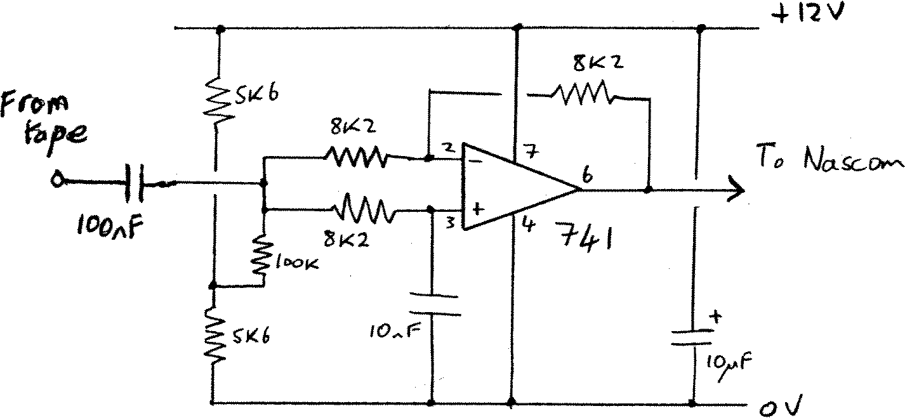
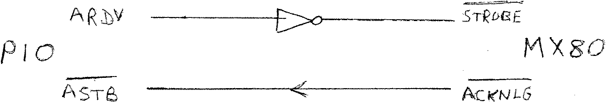

80-Bus News |
March–April 1983 · Volume 2 · Issue 2 |
| Page 21 of 55 |
|---|
connector, and is as follows:
I would also like to correct the impression that a Biphase signal contains only frequencies between half the Baud rate and the Baud rate itself. By chance I had been experimenting with FFT’s (Fast Fourier Transforms) and had calculated spectra for NRI. Biphase and Biphase-M encoded random data streams shortly before the arrival of issue 3. These show that in fact the spectra of both Biphase signals reach a peak at the Baud rate, and have minima at 0 frequency (ie DC) and twice the Baud rate. NRZ on the other hand has a minimum at the Baud rate but is not DC free and so cannot be used for taping data. This is not to say however that Biphase data cannot be recovered after passing it through a bandpass filter such as a tape recorder. (My FFT program is written in Hisoft Tape Pascal 4, and takes about 30 seconds to calculate a 512 point spectrum.)
Can it be that I am the only reader of 80-bus News to realise that the PIO’s RDY and /STB lines are ideally suited to handshaking with the printer’s /STROBE and /ACKNLG lines? All that is required is the addition of an LS TTL inverter:

The port must be in mode 0 (output). Busy should still be taken back to an input line on the other port to allow the driver software to monitor the printer status, unless that is you drive the printer on interrupt. My printer is at the end of 3m of ribbon cable, but I have had no problem with spurious signals oar the lack of a program determined settling time.
| Page 21 of 55 |
|---|